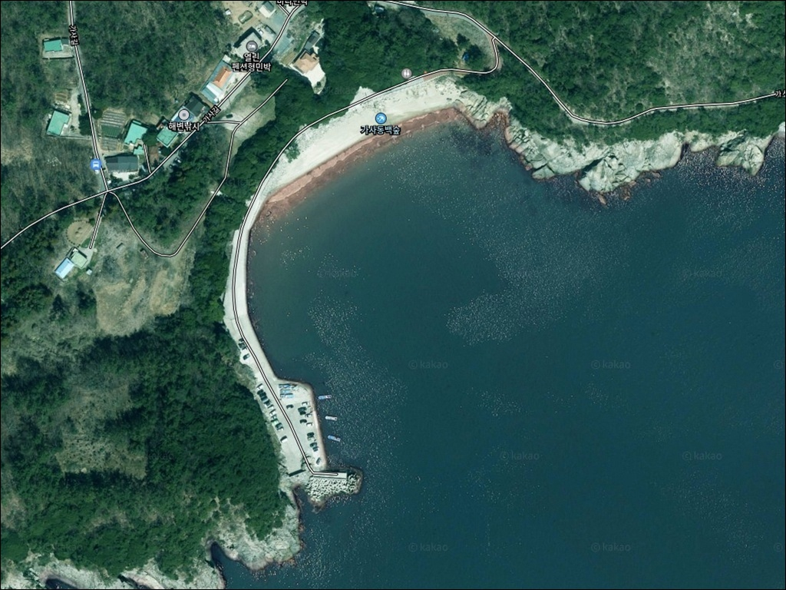
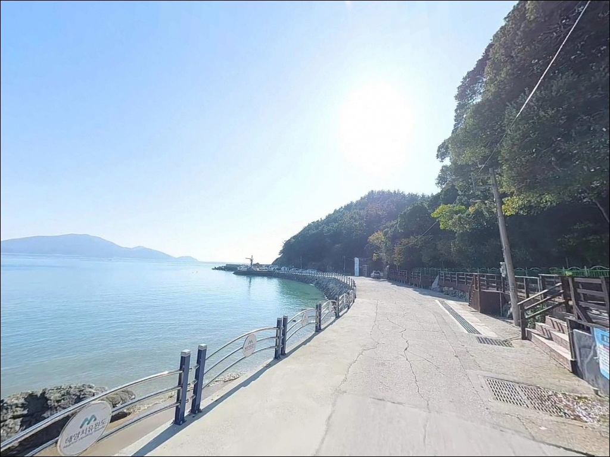
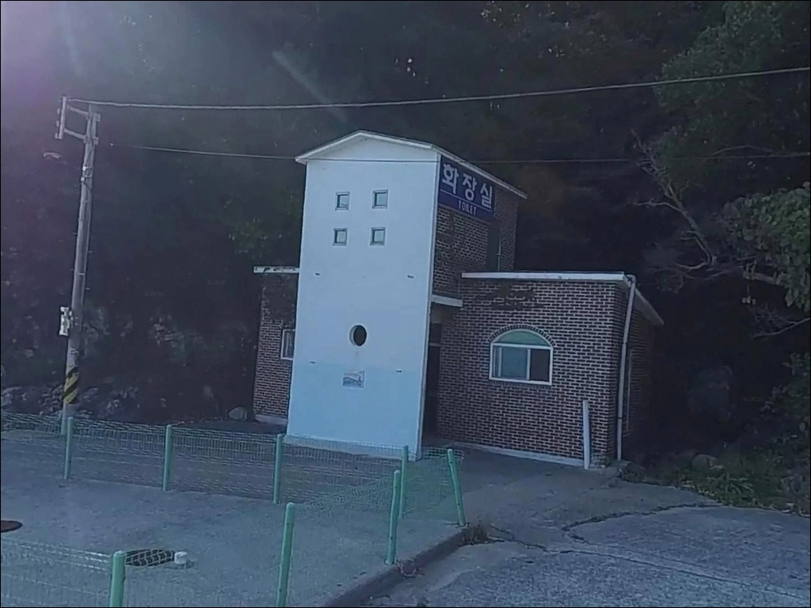
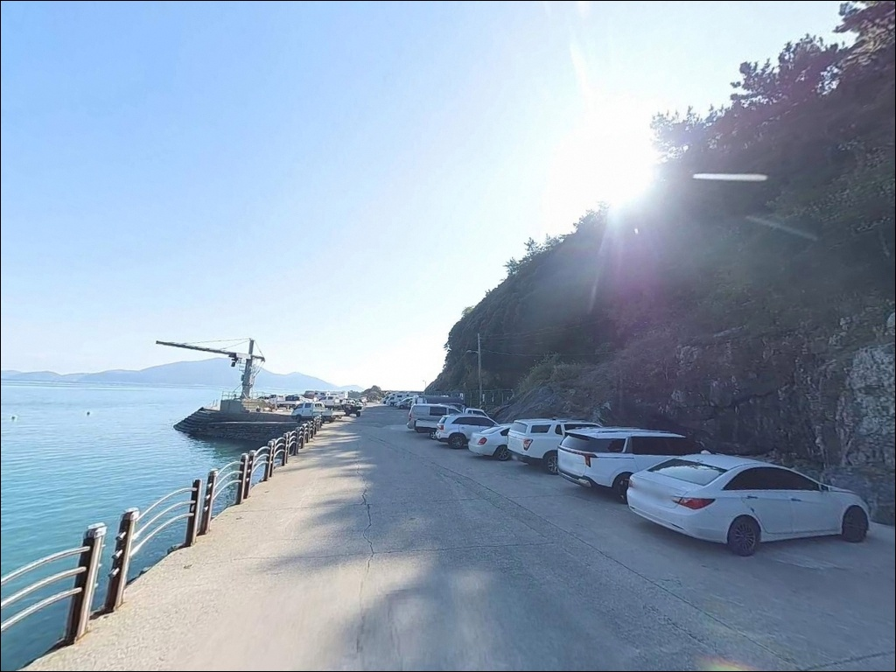
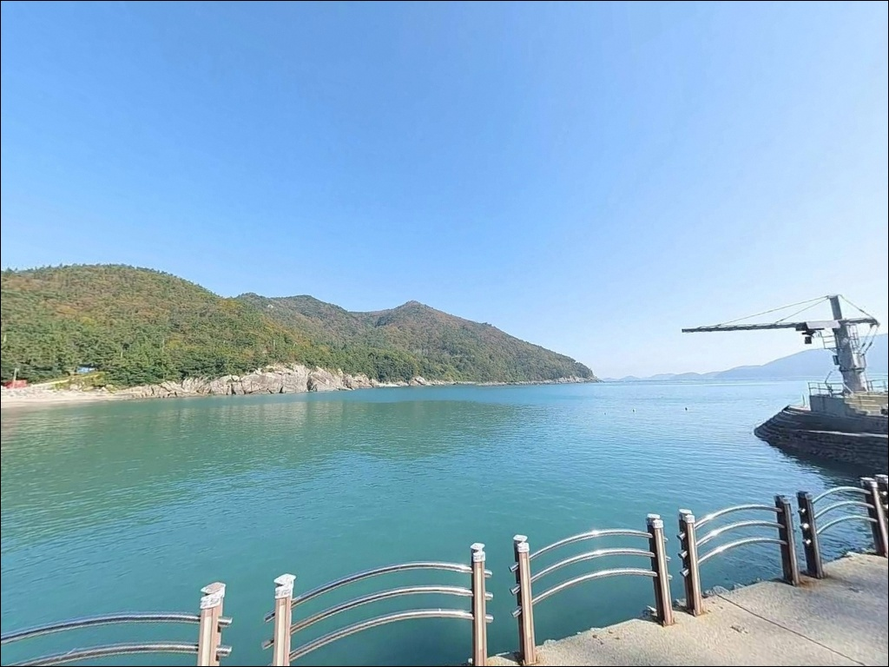
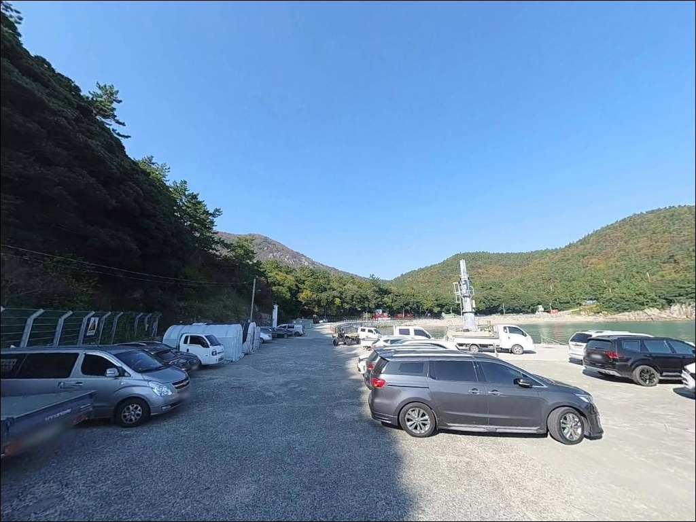
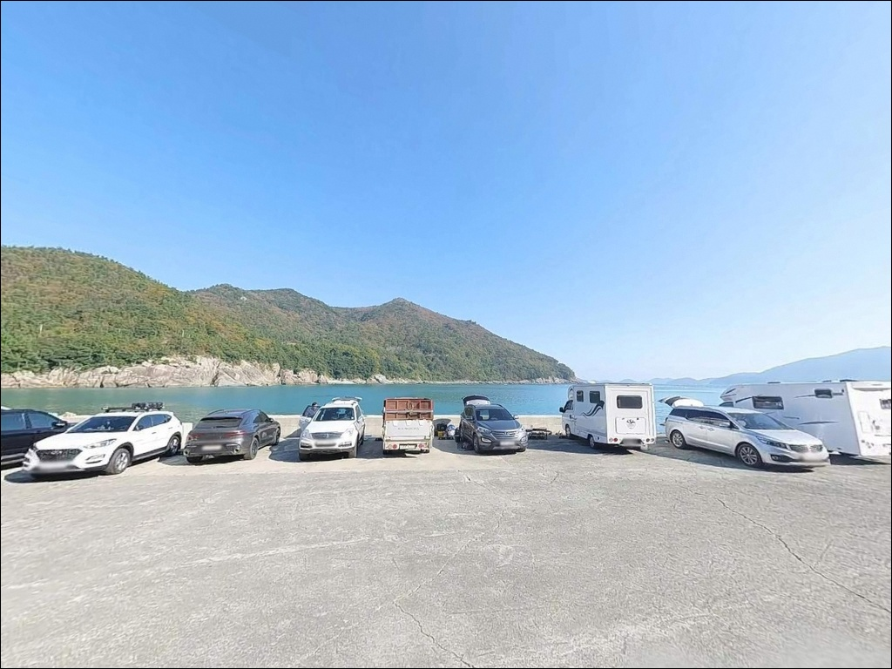
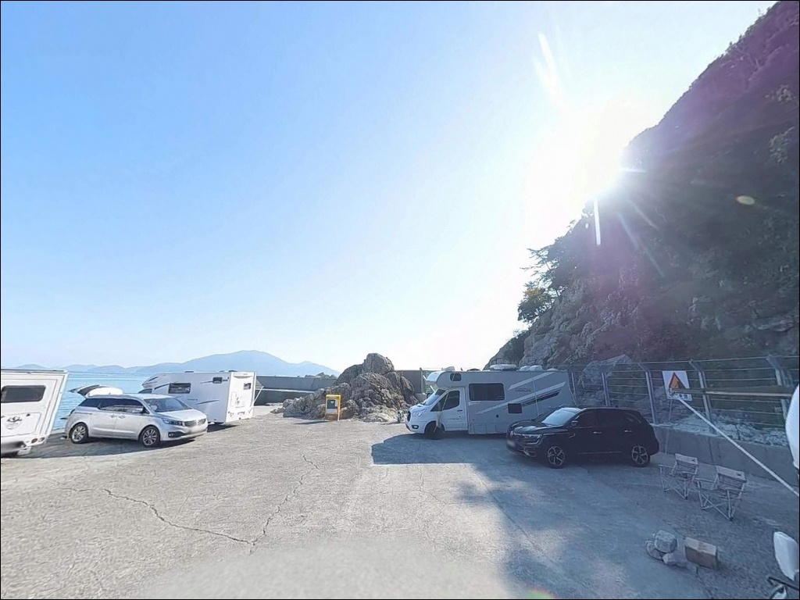
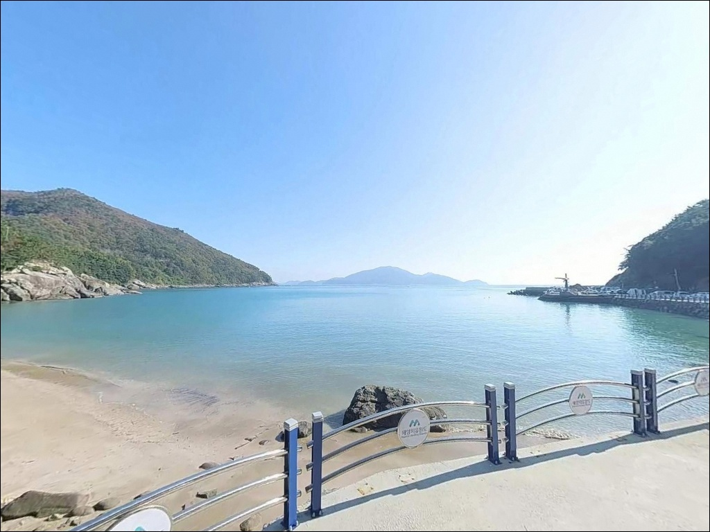

가사동백숲해변, 조약도 전남 완도군 전국구로 유명한 노지 바다 차박 낚시 장소
이 페이지에는 광고(제휴 링크 포함)가 있으며, 광고 링크를 통해 구매하면 운영자가 판매 수익 또는 수수료를 받을 수 있습니다. 포인트 사진: 카카오맵 스카이뷰·로드뷰. 이 페이지의 지도·사진 이미지는 카카오맵의 실제 서비스 이미지와 다를 수 있습니다.


포인트 안내
가사동백숲해변
전남 완도군 약산면 해동리 938-2
남향 외해에 직접 노출된 해변이라
물때에 따라 조류 흐름이 살아나는 시간과
잔잔하게 가라앉는 시간이 뚜렷하게 갈립니다.
갯바위 찌낚시를 목적으로 한다면
자리 선정과 물때 판단이 조과의 핵심 변수입니다.
완도 약산도(조약도) 남쪽에 자리한
가사동백숲해변은 동백나무·후박나무로 이루어진
난대림이 해변 배후를 감싼 형태입니다.
백사장 길이는 약 200m 안팎의 소형 해변이지만,
양 끝단 갯바위와 서쪽 인근 방파제가
낚시 거점 역할을 맡고 있습니다.
이 글은 가사동백숲해변의
진입 환경, 차박 여건, 물때 기준,
낚시 지형과 스타일별 공략 조건에 집중합니다.
조황 단정이나 특정 어종 보장은
이 글의 범위에 포함되지 않습니다.

1. 진입 동선과 포인트 접근성
약산도(조약도)는 약산대교와 고금대교를 통해
강진군 마량면 방면에서 차량 진입이 가능합니다.
해동리 가사동백숲해변까지는
섬 내부 해안도로가 연결되어 있으며,
해변 직전 구간은 폭이 좁은 농어촌 도로 수준입니다.
초행이라면 차폭 확인과 교행 주의가
필요한 구간입니다.
해변 진입부 평지 공터에
차량 2~3대 수준의 주차 공간이 확보되어 있으며,
해변과 연결된 해안도로 갓길 확장 구간에서도
1~2대 추가 주차가 가능합니다.
서쪽 약 200m 지점 너붕개 방파제 선착장 앞 평지에도
별도 주차 공간이 형성되어 있어
방파제 낚시를 목적으로 한다면 이쪽을 기점으로 삼는 편이
동선이 단순합니다.
회차는 해변 인근 평지 구간에서 가능하며,
대형 캠핑카나 1톤 이상 화물 차량이라면
출발 전 위성지도로 마지막 진입 구간을
미리 확인하는 것이 안전합니다.

2. 차박 환경과 야간 체류 여건
동백나무와 후박나무로 이루어진 난대림이
해변의 동·서·북쪽 삼면을 감싸는 구조입니다.
배후 숲이 바람을 일부 차단하고
민가 밀집도가 낮아
야간 프라이버시는 양호한 편입니다.
가로등은 해변 입구 인근에 제한적으로 설치되어 있어
개인 조명 장비는 반드시 지참해야 합니다.
남향 외해 노출 구조로
남풍·남서풍 기상 시 파도와 해풍의 영향을
직접 받습니다.
기상 예보에서 남풍이 강하게 예고된 날은
파도 높이가 빠르게 올라올 수 있어
출조 전 해상 기상 확인이 먼저입니다.
해변 인근에 소규모 숙박시설이 산재하나
심야에는 조명 영향이 제한적입니다.
낚시를 마치고 조용히 머무는 용도로는
나쁘지 않은 환경이며,
너붕개 방파제 앞 평지가
바람 차단 측면에서 해변보다 유리합니다.


3. 주변 편의시설 및 인프라 현황
해변 구역 내에 화장실 시설이 갖춰져 있습니다.
해변 인근 직접 상업시설은 없으며,
북동쪽 약 2km 지점 당목항 방면으로 이동하면
면 소재지 수준의 소규모 편의시설을
이용할 수 있는 편입니다.
약산대교와 고금대교를 경유해
강진군 마량항까지 나오면
편의점·주유소·식당 등이 집중된
생활권 거점을 이용할 수 있습니다.
해동리에서 마량항까지는
대교 포함 약 10~15km 수준입니다.
식수·연료·낚시 소품은 출발 전 완비하는 편이
현실적입니다.
해동리 일원에는 완도군이 조성한
약산 해안 치유의 숲이 있으며,
숲길 구간이 여럿 연결되어 있어
낚시 전후 산책 동선으로 활용할 수 있습니다.

4. 낚시 자리 선택 전에 반드시 확인할 조건
가사동백숲해변에서 가장 먼저 확인할 것은
물때입니다.
약산도 남쪽은 금일읍(평일도)과의 사이 수로에 해당해
조류 흐름이 꾸준히 유지되는 해역입니다.
바다타임에서 해동리 기준 물때를 확인하고
조류가 살아나는 물때 전후에 갯바위 자리를
잡는 것이 기본 전략입니다.
남향 외해 노출 구조상
기상 변화 시 파도 상승이 빠릅니다.
기상청 해상 날씨와 파고 예보를
당일 아침에 다시 한번 확인한 뒤 출발해야 합니다.
갯바위 구간은 암반이 미끄러운 편이니
갯바위 전용 신발 착용은 기본 조건입니다.
암초 지형 특성상 채비 손실이 발생할 수 있어
여분 채비는 넉넉하게 준비하는 편이 좋습니다.
마을 어선 이동 동선을 막지 않는 자리를 선정하고,
야간 입장 시 헤드랜턴과 예비 조명은
반드시 지참해야 합니다.

5. 지형이 만드는 낚시 여건 분석
가사동백숲해변의 낚시 지형은
크게 세 구간으로 나뉩니다.
해변 중앙부 백사장은 완만하게 수심이 깊어지는
모래 바닥 구조이며,
양 끝단 갯바위 구간은 수중 암반이 광범위하게 분포하고
수심 변화가 빠르게 발생하는 지점입니다.
그리고 서쪽 약 200m 지점에
너붕개 방파제 선착장이 위치합니다.
갯바위 끝단은 수중여와 암반 경계 구간이 형성되어
조류 흐름이 집중되는 구조입니다.
이 일대 해역은 수중 암반이 풍부하고
외해 조류 흐름이 활성화되어 있어
암반성 어종의 접근이 이루어지는 지형입니다.
감성돔을 비롯한 연안 어종을 기대해 볼 수 있는
지형 조건을 갖추고 있습니다.
너붕개 방파제는 테트라포드가 설치된 소형 선착장 구조로,
방파제 끝단은 원투 효율이 가장 높은 자리입니다.
테트라포드 위는 표면이 미끄러우므로
이동 시 각별한 주의가 필요합니다.
출조 전 가사해수욕장 일대 조황은
검색으로 먼저 확인해 보시기 바랍니다.


6. 외항 노출 해변에서 조과가 달라지는 낚시 스타일 선택 기준
해변 양 끝단 갯바위 구간은
릴찌낚시가 잘 맞는 지형입니다.
수중여와 암반 경계선을 따라 조류가 흐를 때
찌를 흘려 보내면
이 일대 해역에서 기대해 볼 수 있는
암초 어종을 공략하기에 좋은 조건이
만들어집니다.
원투낚시는 백사장 구간 전체와
너붕개 방파제 끝단에서 운용할 수 있습니다.
모래와 암반 경계 구간을 겨냥해
채비를 보내는 방식으로,
방파제 끝단이 원투 거리와 효율 면에서
백사장보다 유리한 자리입니다.
붕장어·숭어 등 바닥권 어종을
기대해 볼 수 있는 방식입니다.
루어낚시는 갯바위 주변 암반 지형을 대상으로
소형 미노우나 웜을 활용한 연안 공략이 가능합니다.
농어나 볼락류를 기대해 볼 수 있으며,
조류 흐름이 바뀌는 물때 전후 타이밍에
반응이 살아나는 편입니다.

7. 대안 포인트와 플랜 B 동선
가사동백숲해변 조류가 강하거나
기상 여건이 여의치 않을 때는
북동쪽 약 2km 거리의
당목항 방파제가 첫 번째 대안입니다.
방파제 구조로 발판이 안정적이고
원투낚시와 갯바위 접근이 모두 가능한 편이며,
당목항은 철부선이 운항하는 항구라
인근 편의시설 이용도 수월합니다.
해변 서쪽 200m 지점의
너붕개 방파제 선착장은
해변과 세트로 운용하기 좋은 거리입니다.
해변 갯바위 자리가 여의치 않을 때
차량으로 이동하지 않고 도보로 이동해
방파제 끝단을 공략할 수 있는 동선입니다.
약산면 득암방파제도 대안으로 고려해 볼 수 있습니다.
방파제 구조 포인트가 해변 대비 수심 확보가 용이해
안정적인 낚시가 가능한 편입니다.
차박 거점을 바꿔야 한다면
당목항 주변 주차 공간이
접근성과 편의성 면에서 더 안정적입니다.

동백숲과 갯바위가 함께 있는
약산도 남쪽 해변을 찾는 낚시인이라면
갯바위 찌낚시나 원투낚시를 주로 즐기는 낚시인이라면
가사동백숲해변의 지형 구조는
잘 맞는 편입니다.
백사장 양 끝 갯바위와 서쪽 너붕개 방파제를
물때에 따라 조합하면
복수 스타일 운용이 가능한 포인트입니다.
온라인 조황 자료가 많지 않은 편이라
출조 전 약산면 일대 조황 검색을
반드시 먼저 해보시기 바랍니다.
반면 방파제 발판에 익숙한 낚시인이거나
대형 차량을 운용하는 경우라면
진입로 확인을 먼저 하는 것이 낫습니다.
남향 외해 노출 구조상
기상이 나쁜 날은 갯바위 자리 자체가
위험해질 수 있어,
파고 예보를 확인한 뒤 출발 여부를 결정하는 것이
기본 원칙입니다.
동백숲이 배후를 감싸는 조용한 해변에서
하룻밤 머무는 차박 여행자라면,
물때에 맞춰 갯바위 낚시를 즐기고
해 지면 숲 소리를 들으며 쉬어가기에
나쁘지 않은 곳입니다.